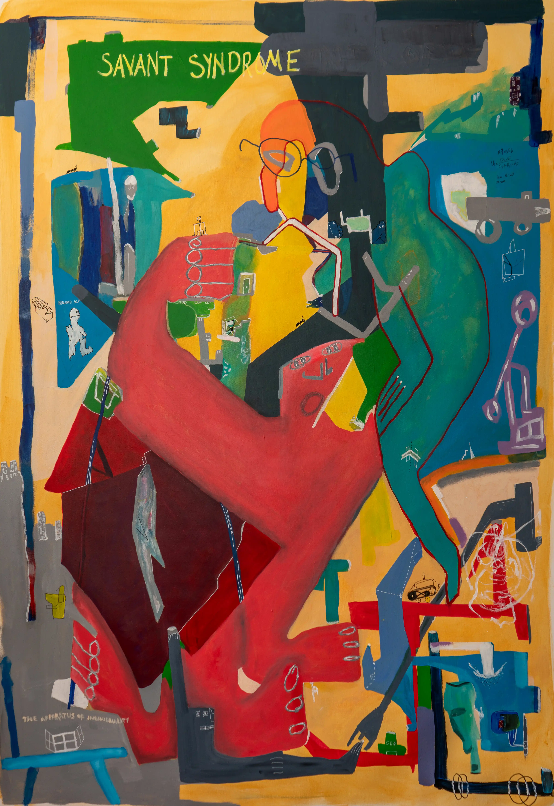
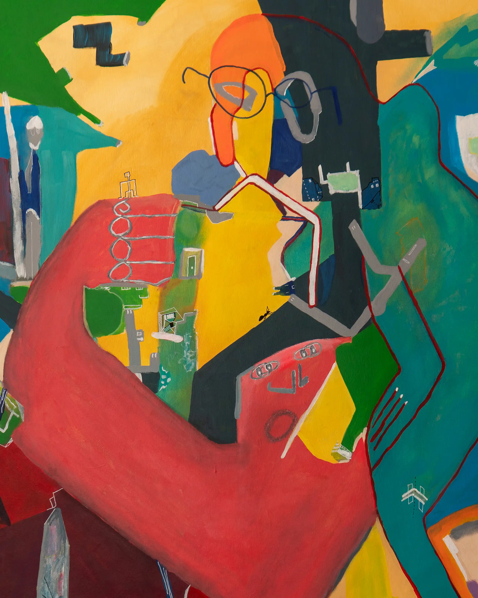
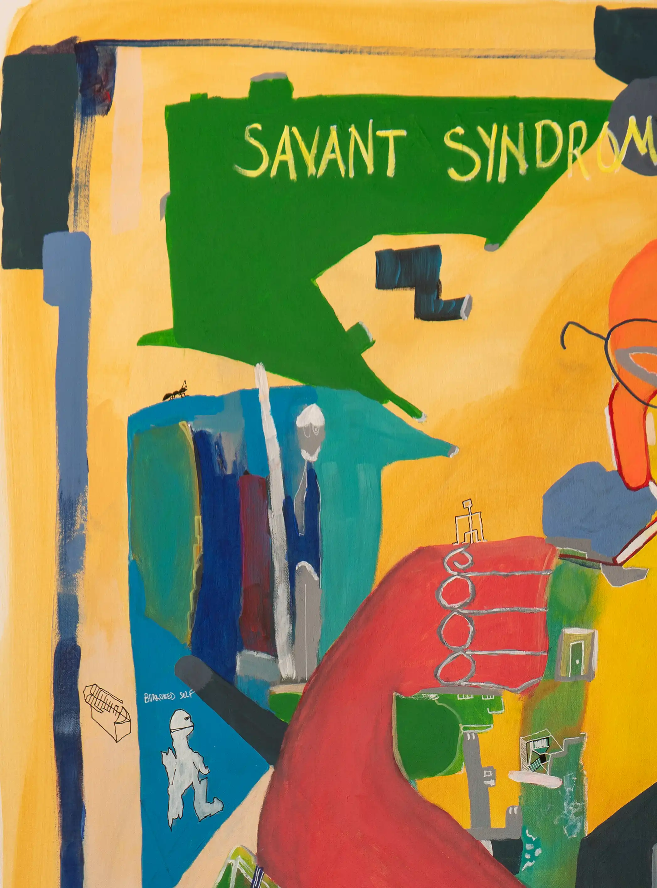
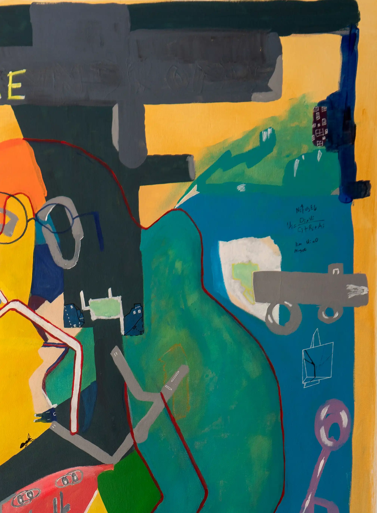
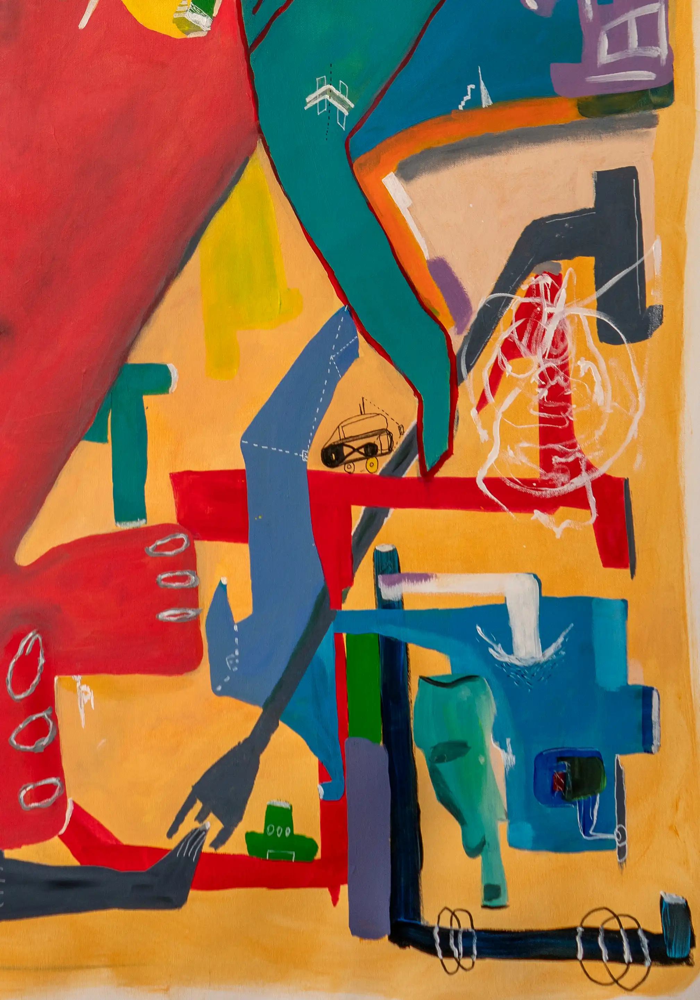
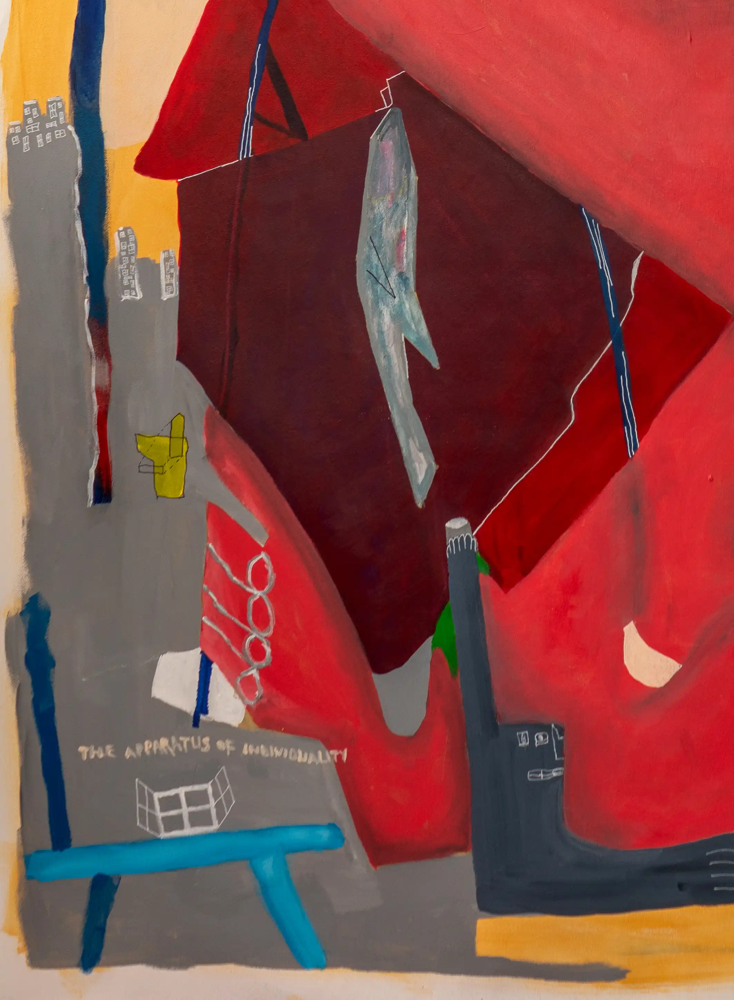

Ü M i T S U R A L
Works
Journal
About
Contact






<
Previous
01 / 08
Next
Related Works
Encyclopedia of Sentiments
2025
Escaping Mind
2024
Insensitivity to Smell
2024
Read the Studio Note on looking, gesture and abstract painting →